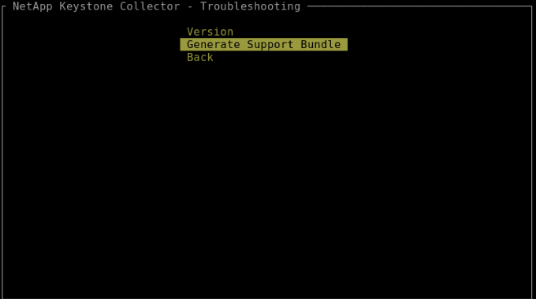
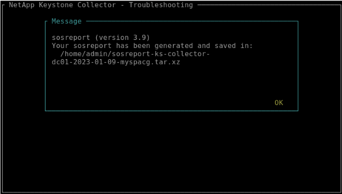

发行说明
发行说明
监控系统运行状况
 建议更改
建议更改
您可以使用支持HTTP请求的任何监控系统、通过Keystone收集器服务监控系统运行状况。
默认情况下、Keystone运行状况服务不接受来自本地主机以外的任何IP的连接。Keystone运行状况端点为 /uber/health、并侦听端口上Keystone收集器服务器的所有接口 7777。查询时、端点将返回一个包含JSON输出的HTTP请求状态代码作为响应、用于描述Keystone收集器系统的状态。
JSON正文提供的整体运行状况 is_healthy 属性、布尔值；以及的每个组件状态的详细列表 component_details 属性。
以下是一个示例：
$ curl http://127.0.0.1:7777/uber/health
{"is_healthy": true, "component_details": {"vicmet": "Running", "ks-collector": "Running", "ks-billing": "Running", "chronyd": "Running"}}
返回以下状态代码：
-
* 200 *：表示所有受监控组件运行状况良好
-
* 503 *：表示一个或多个组件运行状况不正常
-
* 403 ：表示查询运行状况的HTTP客户端不在_allow_列表中、该列表是一个允许的网络CIDR列表。对于此状态、不会返回任何运行状况信息。_allow_列表使用网络CIDR方法控制允许查询Keystone运行状况系统的网络设备。如果收到此错误、请将监控系统添加到 Keystone收集器管理TUI >配置>运行状况监控*中的_allow_列表中。

|
Linux用户、请注意以下已知问题描述 ：
问题描述 收集器：Keystone收集器在使用量计量系统中运行多个容器。如果Red Hat Enterprise Linux 8.x服务器使用美国国防信息系统局(DISA)安全技术实施指南(Stig)策略进行了加固、则会间歇性地看到一个已知的问题描述 with folicyd (文件访问策略守护进程)。此问题描述 标识为 "错误1907870"。*临时解决策 *：在Red Hat Enterprise解决问题之前、NetApp建议您通过输入来解决此问题描述 fapolicyd 进入许可模式。在中 /etc/fapolicyd/fapolicyd.conf、设置的值 permissive = 1。
|
查看系统日志
您可以使用Keystone收集器系统日志查看系统信息并执行故障排除。Keystone收集器使用主机的_jogal_日志记录系统、可以通过标准_jogalctl_系统实用程序查看系统日志。您可以使用以下关键服务来检查日志：
-
ks-collector
-
ks-health
-
ks-autoupdate
主数据收集服务_ks-collector_使用生成JSON格式的日志 run-id 与每个计划的数据收集作业关联的属性。以下是成功收集标准使用情况数据的作业示例：
{"level":"info","time":"2022-10-31T05:20:01.831Z","caller":"light-collector/main.go:31","msg":"initialising light collector with run-id cdflm0f74cgphgfon8cg","run-id":"cdflm0f74cgphgfon8cg"}
{"level":"info","time":"2022-10-31T05:20:04.624Z","caller":"ontap/service.go:215","msg":"223 volumes collected for cluster a2049dd4-bfcf-11ec-8500-00505695ce60","run-id":"cdflm0f74cgphgfon8cg"}
{"level":"info","time":"2022-10-31T05:20:18.821Z","caller":"ontap/service.go:215","msg":"697 volumes collected for cluster 909cbacc-bfcf-11ec-8500-00505695ce60","run-id":"cdflm0f74cgphgfon8cg"}
{"level":"info","time":"2022-10-31T05:20:41.598Z","caller":"ontap/service.go:215","msg":"7 volumes collected for cluster f7b9a30c-55dc-11ed-9c88-005056b3d66f","run-id":"cdflm0f74cgphgfon8cg"}
{"level":"info","time":"2022-10-31T05:20:48.247Z","caller":"ontap/service.go:215","msg":"24 volumes collected for cluster a9e2dcff-ab21-11ec-8428-00a098ad3ba2","run-id":"cdflm0f74cgphgfon8cg"}
{"level":"info","time":"2022-10-31T05:20:48.786Z","caller":"worker/collector.go:75","msg":"4 clusters collected","run-id":"cdflm0f74cgphgfon8cg"}
{"level":"info","time":"2022-10-31T05:20:48.839Z","caller":"reception/reception.go:75","msg":"Sending file 65a71542-cb4d-bdb2-e9a7-a826be4fdcb7_1667193648.tar.gz type=ontap to reception","run-id":"cdflm0f74cgphgfon8cg"}
{"level":"info","time":"2022-10-31T05:20:48.840Z","caller":"reception/reception.go:76","msg":"File bytes 123425","run-id":"cdflm0f74cgphgfon8cg"}
{"level":"info","time":"2022-10-31T05:20:51.324Z","caller":"reception/reception.go:99","msg":"uploaded usage file to reception with status 201 Created","run-id":"cdflm0f74cgphgfon8cg"}
以下示例显示了可选性能数据收集作业的成功示例：
{"level":"info","time":"2022-10-31T05:20:51.324Z","caller":"sql/service.go:28","msg":"initialising MySql service at 10.128.114.214"}
{"level":"info","time":"2022-10-31T05:20:51.324Z","caller":"sql/service.go:55","msg":"Opening MySql db connection at server 10.128.114.214"}
{"level":"info","time":"2022-10-31T05:20:51.324Z","caller":"sql/service.go:39","msg":"Creating MySql db config object"}
{"level":"info","time":"2022-10-31T05:20:51.324Z","caller":"sla_reporting/service.go:69","msg":"initialising SLA service"}
{"level":"info","time":"2022-10-31T05:20:51.324Z","caller":"sla_reporting/service.go:71","msg":"SLA service successfully initialised"}
{"level":"info","time":"2022-10-31T05:20:51.324Z","caller":"worker/collector.go:217","msg":"Performance data would be collected for timerange: 2022-10-31T10:24:52~2022-10-31T10:29:52"}
{"level":"info","time":"2022-10-31T05:21:31.385Z","caller":"worker/collector.go:244","msg":"New file generated: 65a71542-cb4d-bdb2-e9a7-a826be4fdcb7_1667193651.tar.gz"}
{"level":"info","time":"2022-10-31T05:21:31.385Z","caller":"reception/reception.go:75","msg":"Sending file 65a71542-cb4d-bdb2-e9a7-a826be4fdcb7_1667193651.tar.gz type=ontap-perf to reception","run-id":"cdflm0f74cgphgfon8cg"}
{"level":"info","time":"2022-10-31T05:21:31.386Z","caller":"reception/reception.go:76","msg":"File bytes 17767","run-id":"cdflm0f74cgphgfon8cg"}
{"level":"info","time":"2022-10-31T05:21:33.025Z","caller":"reception/reception.go:99","msg":"uploaded usage file to reception with status 201 Created","run-id":"cdflm0f74cgphgfon8cg"}
{"level":"info","time":"2022-10-31T05:21:33.025Z","caller":"light-collector/main.go:88","msg":"exiting","run-id":"cdflm0f74cgphgfon8cg"}
生成并收集支持包
通过Keystone收集器TUI、您可以生成支持包、然后将其添加到服务请求中以解决支持问题。请遵循此操作步骤 ：
-
启动Keystone收集器管理TUI实用程序：
$ keystone-collector-tui -
转至*故障排除>生成支持包*。

-
生成时、将显示保存分发包的位置。使用FTP、SFTP或SCP连接到该位置并将日志文件下载到本地系统。

-
下载文件后、您可以将其附加到Keystone ServiceNow支持服务单中。有关提交服务单的信息、请参见 "正在生成服务请求"。